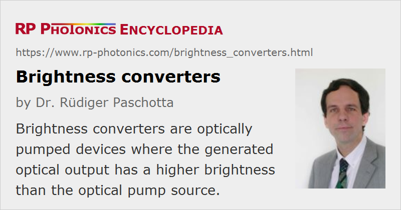

Brightness Converters
Definition: optically pumped devices where the generated optical output has a higher brightness than the optical pump source
Categories: photonic devices, lasers
How to cite the article; suggest additional literature
Author: Dr. Rüdiger Paschotta
The output power of a laser device is of course always lower than the pump power. Nevertheless, the brightness of an optically pumped laser can be far higher than the brightness of its pump source, if the pump source has a poor beam quality (thus a low brightness) while the beam quality of the output beam is much better.
Some examples of lasers serving as brightness converters are:
- A solid-state bulk laser (e.g. a rod laser or a thin-disk laser) may be end-pumped or side-pumped with high-power laser diodes and emit an essentially diffraction-limited beam, having a significantly increased brightness. This effect is typically more pronounced for a side-pumped laser utilizing the very diffuse light from an arc lamp, even though the output beam quality is then also often not diffraction-limited.
- A large brightness enhancement can also be achieved with a high-power fiber laser based on a double-clad fiber. The pump cladding may guide thousands of modes, so that e.g. a diode bar with very high M2 factor can be used. The single-mode fiber core allows for diffraction-limited beam quality, and the power conversion efficiency can be higher than 80%.
- An optically pumped vertical external cavity surface-emitting laser (VECSEL), which is a kind of semiconductor laser, can also generate a diffraction-limited output. Its requirements concerning pump beam quality are very low, since the pump radiation is absorbed in a very thin layer, so that its beam divergence does not matter very much (even though a too high beam divergence can result in problems with geometric constraints in the laser construction).
- High-power optical parametric oscillators can in principle also be operated as brightness converters. Although most OPOs are pumped with close to diffraction-limited beams, it is possible to pump an OPO with a highly multimode beam while still generating a diffraction-limited signal beam. The idler beam quality will then be poor, but this may not matter.
In many cases, the function as a brightness converter is essential for laser applications. For example, many solid-state lasers are used in material processing because their pump light, having too low brightness, could not be used directly. (Another frequently required function is pulse generation e.g. via Q switching.)
Questions and Comments from Users
Here you can submit questions and comments. As far as they get accepted by the author, they will appear above this paragraph together with the author’s answer. The author will decide on acceptance based on certain criteria. Essentially, the issue must be of sufficiently broad interest.
Please do not enter personal data here; we would otherwise delete it soon. (See also our privacy declaration.) If you wish to receive personal feedback or consultancy from the author, please contact him e.g. via e-mail.
By submitting the information, you give your consent to the potential publication of your inputs on our website according to our rules. (If you later retract your consent, we will delete those inputs.) As your inputs are first reviewed by the author, they may be published with some delay.
See also: brightness, solid-state lasers, fiber lasers, vertical external-cavity surface-emitting lasers
and other articles in the categories photonic devices, lasers
|  |
If you like this page, please share the link with your friends and colleagues, e.g. via social media:
These sharing buttons are implemented in a privacy-friendly way!